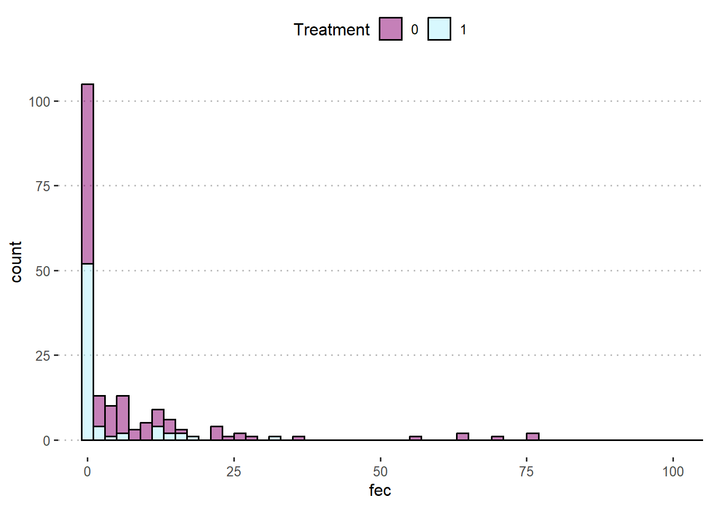
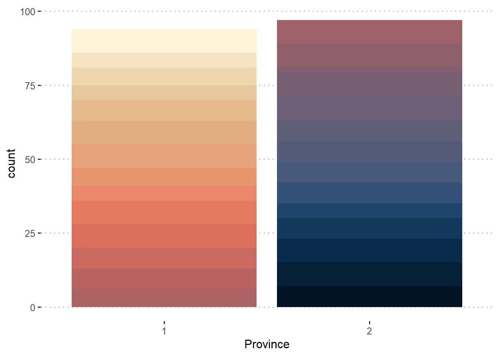
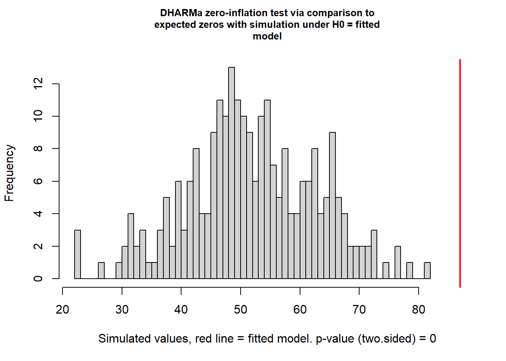
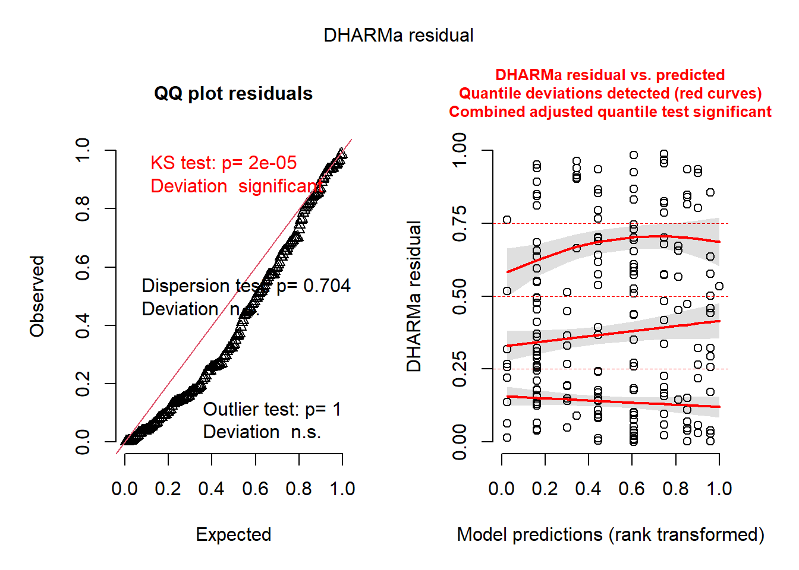
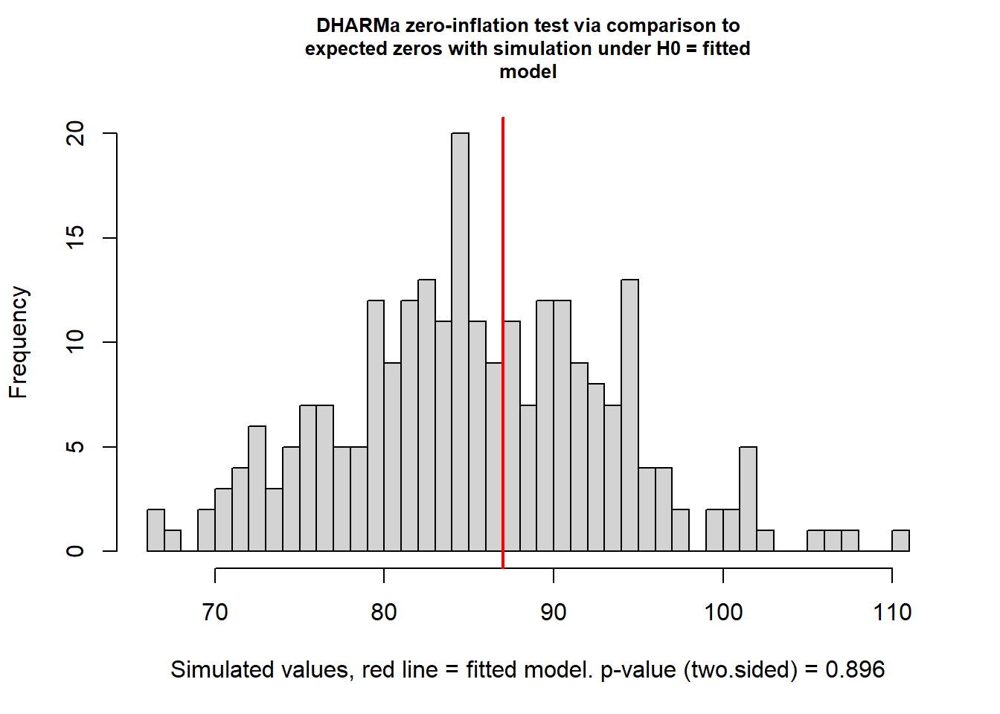
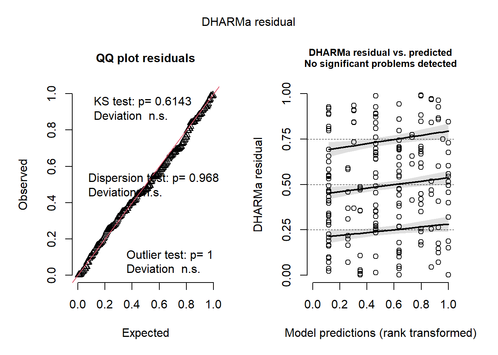
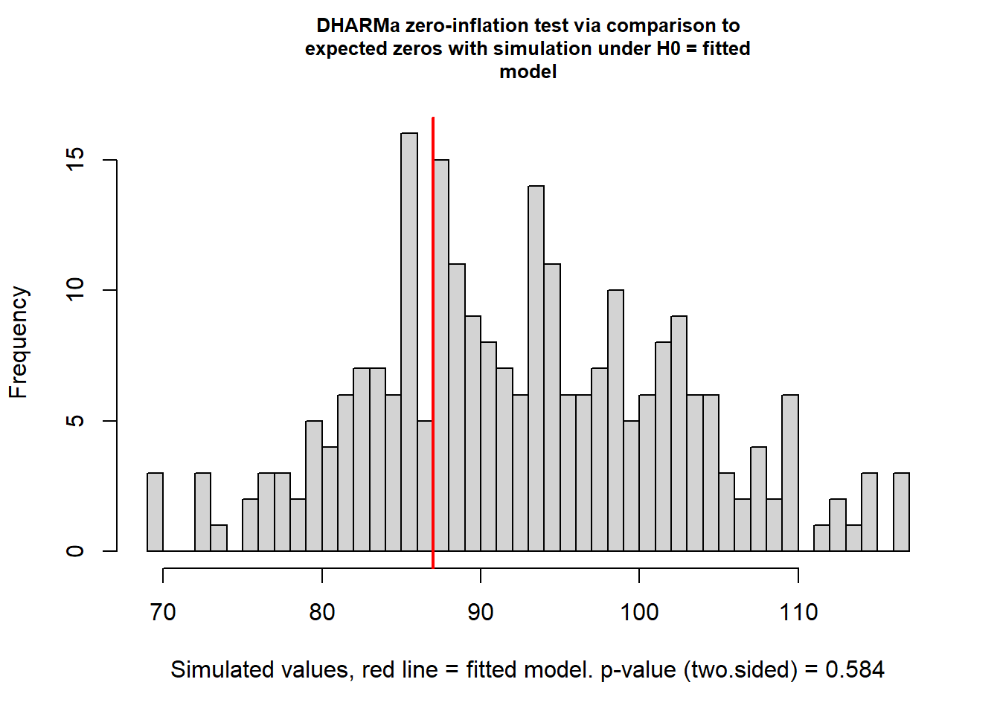
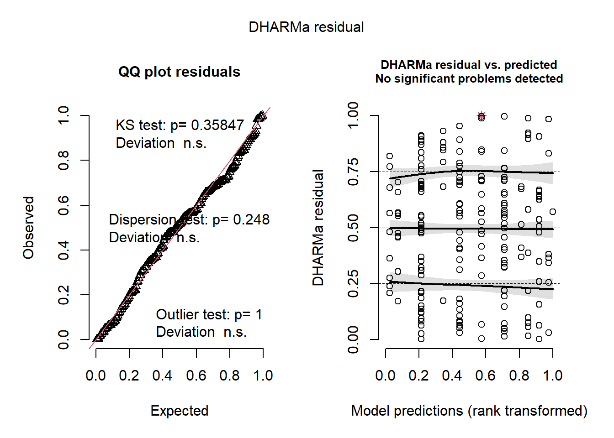
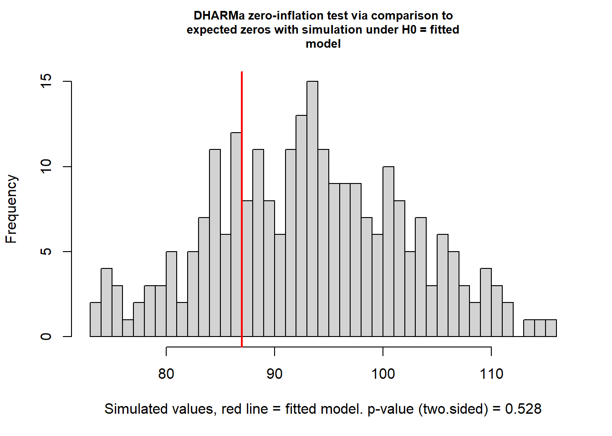
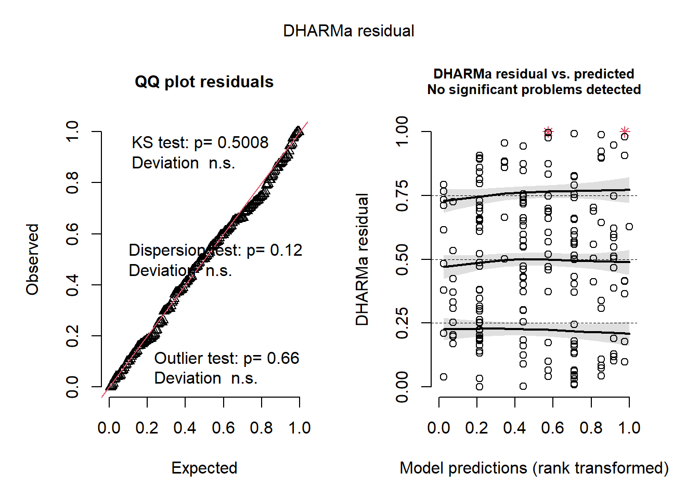

Day 19 Zero-inflated models
November 9th, 2026
19.2 Zero-inflated models
- Data contain more zeroes than expected
- Zero-inflated models can be generally described as \[P(Y=y) = \begin{cases} \pi + (1-\pi)f(0) & \text{for } y=0 \\(1-\pi)f(y) & \text{for } y =1, 2, \dots \end{cases},\]
where:
- \(y\) is the data,
- \(f(y)\) is the discrete probability function (e.g., Poisson, NB)
- \(\pi\) is the probability of the process \(f(\cdot)\) being “off”,
- \(1-\pi\) is the probability of the process \(f(\cdot)\) being “on”.
19.3 Applied example
The data below were generated by a study of gastro-intestinal parasites in Ontario dairy cows based on a Canadian longitudinal study.
The outcome of interest is fecal egg count in 5 gram of feces (fec).
Independent variables include:
tx[treatment; treated (1) or not treated (0)],lact[lactation; multiparous (1) or primiparous (0)],manure[manure spread on pasture; yes (1) or no (0)],
library(tidyverse)
library(ggpubr)
library(glmmTMB)
library(emmeans)
url <- "https://raw.githubusercontent.com/stat870/fall2025/refs/heads/main/data/fecal_egg_counts.csv"
dat <- read.csv(url) |>
mutate(across(c(tx, lact, manure, past_lact),
~as.factor(.)))
dat |>
ggplot(aes(fec))+
geom_histogram(aes(group = tx, fill = tx),
alpha = .5, color = "black", binwidth = 2)+
coord_cartesian(xlim = c(0, 100))+
scico::scale_fill_scico_d(palette = "hawaii")+
labs(fill = "Treatment")+
theme_pubclean()
ALSO: the data come from a longitudinal study that included multiple cows from different herds and provinces in Canada. That the cows coming from the same herd have more things in common than cows coming from another herd, and same for provinces.
dat |>
ggplot(aes(factor(province)))+
geom_bar(aes(fill = factor(herd)),
show.legend = F)+
labs(x = "Province")+
scico::scale_fill_scico_d(palette = "lipari", direction = -1)+
theme_pubclean()
19.3.1 Poisson model
So, we know that the groups are herds within province. Then, a statistical model could be
\[y_{ijklmno} | \boldsymbol{b} \sim Pois(\mu_{ijklmno}), \\ \text{log}(\mu_{ijklmno}) = \eta_{ijklmno} = \\ \eta_0 + T_i +L_j + MH_k + ML_l + p_m + b_{n(m)}, \\ b_{n(m)} \sim N(0, \sigma^2_b),\] where:
- \(y_{ijklmno}\) is the count of eggs in 5 g of fecal matter for the \(o\)th cow in the \(n\)th herd in the \(m\)th province, that had treatment \(i\) applied and had parity \(j\) and the \(k\)th and \(l\) manure conditions,
- \(\mu_{ijklmno}\) is the mean of said observation,
- \(\eta_{ijklmno}\) is the linear predictor of \(\mu_{ijklmno}\),
- \(T_i\) is the treatment effect on the linear predictor,
- \(L_i\) is the effect of multiparity on the linear predictor,
- \(MH_k\) is the effect of manure on heifer pature on the linear predictor,
- \(ML_l\) is the effect of manure on cow pature on the linear predictor,
- \(p_m\) is the effect of the \(m\)th province,
- \(b_{n(m)}\) is the effect of the \(n\)th herd in the \(m\)th province.
m <- glmmTMB(fec ~ tx + lact + manure +
province + (1|province:herd),
family = poisson(),
data = dat)
residuals <- DHARMa::simulateResiduals(m, refit = FALSE)In the plot below, the grey histogram indicates the amount of zeroes in simulated data generated by the fitted model, and the red line indicates the amount of zeroes in the data.

##
## DHARMa zero-inflation test via comparison to expected zeros with
## simulation under H0 = fitted model
##
## data: simulationOutput
## ratioObsSim = 1.6604, p-value < 2.2e-16
## alternative hypothesis: two.sided
19.3.2 Zero-inflated Poisson model
From the model above, we can keep the linear predictor but add a zero inflation component. \[P(Y=y_{ijklmno}) = \begin{cases} \pi + (1-\pi)f(0) & \text{for } y=0 \\(1-\pi)f(y) & \text{for } y =1, 2, \dots \end{cases},\] where:
- \(y_{ijklmno}\) is the same data as above,
- \(f(y)\) is the discrete probability function elaborated above,
- \(\pi\) is the probability of the process \(f(\cdot)\) being “off”,
- \(1-\pi\) is the probability of the process \(f(\cdot)\) being “on”.
m <- glmmTMB(fec ~ tx + lact + manure +
province + (1|province:herd),
family = poisson(),
ziformula = ~1,
data = dat)
residuals <- DHARMa::simulateResiduals(m, refit = FALSE)In the plot below, the grey histogram indicates the amount of zeroes in simulated data generated by the fitted model, and the red line indicates the amount of zeroes in the data.

##
## DHARMa zero-inflation test via comparison to expected zeros with
## simulation under H0 = fitted model
##
## data: simulationOutput
## ratioObsSim = 1.0125, p-value = 0.896
## alternative hypothesis: two.sided
19.3.3 Negative Binomial model
In the case of overdispersion, negative binomial models come in handy.
m <- glmmTMB(fec ~ tx + lact + manure +
province + (1|province:herd),
family = nbinom1(),
data = dat)
residuals <- DHARMa::simulateResiduals(m, refit = FALSE)
DHARMa::testZeroInflation(residuals)
##
## DHARMa zero-inflation test via comparison to expected zeros with
## simulation under H0 = fitted model
##
## data: simulationOutput
## ratioObsSim = 0.93316, p-value = 0.584
## alternative hypothesis: two.sided
19.3.4 Zero-inflated NB model
m <- glmmTMB(fec ~ tx + lact + manure +
province + (1|province:herd),
family = nbinom1(),
ziformula = ~ 1 ,
data = dat)
residuals <- DHARMa::simulateResiduals(m, refit = FALSE)
DHARMa::testZeroInflation(residuals)
##
## DHARMa zero-inflation test via comparison to expected zeros with
## simulation under H0 = fitted model
##
## data: simulationOutput
## ratioObsSim = 0.92838, p-value = 0.528
## alternative hypothesis: two.sided
19.3.5 Marginal means
## $emmeans
## tx response SE df asymp.LCL asymp.UCL
## 0 15.86 3.92 Inf 9.78 25.7
## 1 6.16 2.01 Inf 3.25 11.7
##
## Results are averaged over the levels of: lact, manure, province
## Confidence level used: 0.95
## Intervals are back-transformed from the log scale
##
## $contrasts
## contrast ratio SE df null z.ratio p.value
## c(1, -1) 2.58 0.634 Inf 1 3.850 0.0001
##
## Results are averaged over the levels of: lact, manure, province
## Tests are performed on the log scale